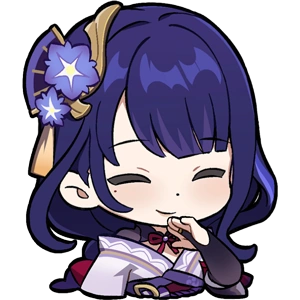
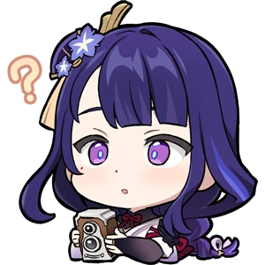
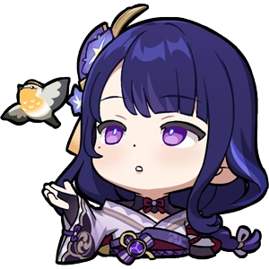
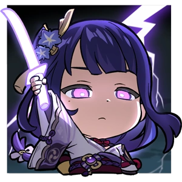

-
The Lore of the Shogun
The Raiden Shogun is a firm believer of what she believes to be eternity — a place in which everything is kept the same, regardless of what goes on. She is honorable in her conduct and is revered by the people of Inazuma.
The Raiden Shogun exists in two forms — Ei,
her true identity, and the Shogun, a puppet created by Ei to oversee Inazuma in her stead while she meditates in the Plane of Euthymia.
This puppet follows a set of directives programmed into her, which are extremely difficult to modify.
The Shogun is cold and stern in personality, even callous at times; she is limited in emotional expression, has no likes and dislikes, and has no need for recreation.
The Shogun thinks of herself as Ei's assistant
and carries out her creator's exact will, unable to act on her own volition.
If her usual functions are disabled, the Shogun becomes ineffectual.
Due to limited protocols as a result of Ei's initial indifference towards anything other than "eternity", the puppet is able to be manipulated by external influences.
For example, the Kujou Clan and Fatui persuaded her into initiating and maintaining the Vision Hunt Decree.
While Ei has a more stern demeanor than the average person, she is notably more emotive and sociable than the Shogun.
Unlike the Shogun, Ei has preferences, such as a love for sweets and passion of martial arts.
Due to her dedication to eternity, Ei maintains a wary attitude on the idea of change.
However, she demonstrates curiosity rather than disdain towards new affairs,
such as the appearance of the Traveler[4]and the customs of the modern world.
Due to having lost many of her loved ones over the centuries, Ei is driven by a fear of further loss wanting to preserve Inazuma.
To this end, she previously sealed herself in the Plane of Euthymia to keep herself from the effects of erosion.
She created the puppet Shogun to ensure immunity from the decay of her physical body.
While in the Plane of Euthymia,
Ei was indifferent to anything that did not affect her pursuit of eternity and had a low opinion of human ambition due to it resulting in loss and suffering.
Thus, making it incompatible with eternity.
While in the Plane of Euthymia she was not unmoved by loneliness, as Ei is shown enjoying Yae Miko and the Traveler's company.
In spite of her flawed actions, Ei is devoted to Inazuma, simply longing to protect it and her people. After she is convinced that her actions were destructive,
Ei shows remorse and is willing to change her perspective regarding eternity to become a better ruler.
She also gained a newfound respect for the idea of human ambition and it's achievements.
Raiden's Lore -

Appearance
The Raiden Shogun uses the tall female model. She has pale skin, purple eyes with light blue pupils, and long, dark violet hair that becomes lighter at the ends, which glow when she uses her Elemental Skill or her Elemental Burst. She also has a beauty mark below her right eye.
Raiden's Appearance -

Character Details
Since the dawn of life, humankind has always borne an intense yearning for and curiosity about the world. This is the anchor point of their cognition and is the foundation of all reason.
The world of the people of Inazuma is also thus. There, thunder, lightning, wind, and rain were primordial facts of life, as well as light, and the sea... and the Raiden Shogun.
Babes nestling in their mothers' arms hear tales of the Shogun's slaying of many gods and conquering of other races.
When young men and women roam the islands, they see the gorge split asunder by a blade of lightning and the pale, still-standing bones of the giant snake.
Soldiers take to the battlefield with "glory to the Shogun and her everlasting reign!" upon their lips.
The people work in contentment and peace, knowing that the Shogun and her loyal Tri-Commission are there.
The great name of the Raiden Shogun has long shaken off the shackles of mere life, becoming the eternal traditional belief of Inazuma.
People trust in this great name and its might, believing that their descendants shall witness the same sights, that the same faith will form the foundations of their inner worlds, and that this will pass on from generation to generation.
This is the eternal paradise that the Almighty Shogun promised her people.
Raiden's Details -

Character story 1
The true name of the Raiden Shogun is "Raiden Ei."
In her long road, she has witnessed the price that Inazuma has had to pay for progress over the hundreds and thousands of years.
The happiest years of her life had passed her by, and those she once considered friends became her foes. In the end, she even lost the reason for which she had wielded her sword.
"Where there is progress, there must be loss."
Ei believed that this was the iron-clad rule of the world, with time as its merciless enforcer.
The greatest and most prosperous nation of men collapsed overnight, and even that most ancient Liyue Harbor would say farewell to its Geo Archon. The winds of parting came whistling in from the outer edge of time.
However resounding the Raiden Shogun's name, centuries later, millennia later... Someday, Inazuma would lose the protection of its deity.
As a warrior, she was wary of all foes. Even if that enemy was a crisis as intangible as time's passage, she had to find a countermeasure, a weapon she could use to defeat it in time.
Her answer? "Eternity." Only Eternity could freeze all things under the sky, make Inazuma truly deathless.
"Then, while things are still good, let us have stillness... Let us march towards Eternity."
Raiden's story -

Character story 2
For beings with a perishable form of flesh to pursue Eternity, they must first solve the unavoidable problem of lifespan.
This limited time troubled Ei greatly, until one day when a mysterious technique came before her eyes as if by a stroke of fate.
Using such techniques, one could create intricate puppets indistinguishable from true life.
In theory, this puppet could perfectly imitate everything about Ei. It could surpass the limits of her lifespan and defend Inazuma forever. Yet, how could creating a copy of an Archon be a simple affair?
Ei conducted countless experiments to this effect, discarded a great many failed products, and spent an unimaginable amount of time and resources—
But at last, by her dogged pursuit and warrior's spirit, she was able to create a flawless puppet.
The newborn Raiden Shogun sat there silently, listening to Ei speak all about her, "her," and even about them. The future of Inazuma was here, inscribed upon a gorgeous blueprint.
The automaton had but one question to ask Ei: "There is no turning back from forsaking your form. Do you regret nothing?"
"Your existence is my answer."
Then, Ei transferred her consciousness into her blade, and thus was born the Plane of Euthymia.
Raiden's story -
Character story 3
Before Raiden Ei became the Shogun, she was a samurai responsible for seeing that the previous Shogun's orders were carried out.
The previous Electro Archon, Raiden Makoto, was no great fighter, and the things Ei had charge over were mostly matters of warfare and slaughter. However, Ei also had moments of repose away from battle, sitting with her friends under the sakura trees and playing karuta.
Due to her character, Ei was always the most wooden player. She was never the final victor, nor did she ever have a taste of the prizes that the Kitsune Saiguu reserved for the winners.
Thus, she poured the effort that she put into swordsmanship into karuta practice, often pestering Makoto or Mikoshi Chiyo to karuta matches, or spending much time by moonlight reading the poetry inscribed on the cards out loud.
At last, the day came that under the sakura trees, Ei would defeat opponent after opponent. Even the mighty tengu would be felled after a hard-fought battle, and thus was she crowned the champion.
Ei let out a victorious whoop at her victory, only to be greeted by the sounds of her friends' laughter. Only then did she realize that she had lost her usual composure entirely, before snapping both arms back down and reverting to her usual cool facade.
Of course, her friends did not intend to make sport of her. Indeed, they understood her character and the manner in which she had worked ever so hard to come out on top.
As for the Kitsune Saiguu, oh, how amused she looked as she presented Ei with some pastries.
"I said it was a reward, yes, but it was simply some hand-made cakes of mine. I didn't think that you would be so concerned about it, Ei. Well then, enjoy the spoils of your victory to your heart's content.
"Ei was hardly one to be greedy for snacks. But as a samurai, she firmly believed that what she lost must be reclaimed. These pastries were more akin to a vindication of her desire to win.
—But it was not long before that cool demeanor of hers broke into a smile again. The cakes were lovely — just like the taste of victory. As for her clumsy attempts to hide that smile, one could only say that it was an entertaining sight all around for her friends.
To this day, Ei still often remembers that sakura tree.
...Even though she has not gone to see it in a long time, and even though no one sits under it anymore, she wishes that time might stop forever.
Raiden's story -

Character story 4
Ei still remembers the way in which Makoto greatly loved the scenery of Inazuma, its cuisine, and the stories of its people — and how she loved telling Ei all about it.
Though they both understood the concept of erosion well, Makoto was unlike Ei, who worried about the future more often. Instead, Makoto's energies were focused on the present.
"It is precisely because we know that this scene is but a fleeting shadow that we should enjoy it all the more.
"Then, Ei could only smile wryly, realizing that she, the kagemusha, was even more old-fashioned than the real Raiden Shogun. She thought to herself that she must learn to be more leisurely, just like Makoto.
Yet the times changed all too quickly, all but catching Ei off guard. Before she knew it, her hands already held the blade that the dying Raiden Makoto had passed on to her.
This day, the kagemusha was now the true Raiden Shogun.
And it was on this day that Ei truly felt the agony of erosion.
As time marched forward inexorably, even this blade, this sakura... All life on Inazuma would fade before her eyes.
This was the foundation of Inazuma, and it was the thing that the Raiden Shogun must defend.
"If you look at it this way, thinking ahead is not meaningless, nor is it vain arrogance.
"Having resolved herself, her life exceeded its mortal shell, and eternity descended upon the mortal plane.
Raiden's story -
Character story 5
One night, Raiden Ei entered a beautiful dreamscape while meditating.Here, there was nothing left between heaven and earth but her, and a "her" that was akin to looking into a mirror.
The automaton's voice flowed into her ears like a sigh: "the eternity you resolved to establish in your heart has been shaken by the countless wishes of the people. Thus, you have become my enemy."
Back when she was creating the puppet, Ei had considered all the hidden risks involved.
She believed that anything was possible — including the worst-case scenario... in which she too would someday become a threat to Eternity.
But she had to press on. She had to reach Eternity. This, she would not permit to be stayed by any outside force.
The puppet's words were something that she had asked herself long ago:
"You believe that you are more firmly convicted now than you were yesterday, and that is why you are presently correct. Is that so?"
"Do you presently have some new ideas, or have you, too, fallen victim to inexorable 'erosion'?"
Their faces were the same, but they spoke of different ideals. The battle with herself, with her past, would come someday.
But it was not this day. Ei knew well that she was not yet ready.
Her heart was clear, and she would have remained in that state, but hearing the cries of her people, she had to command her feet to stop.
The sky above the mirror was no longer empty, and all about the silent halls, she heard the cry of crows. Dawn was coming. The samurai must take up her sword.
This dream was ever so real, and it, too, passed like a shadow.
Raiden's story